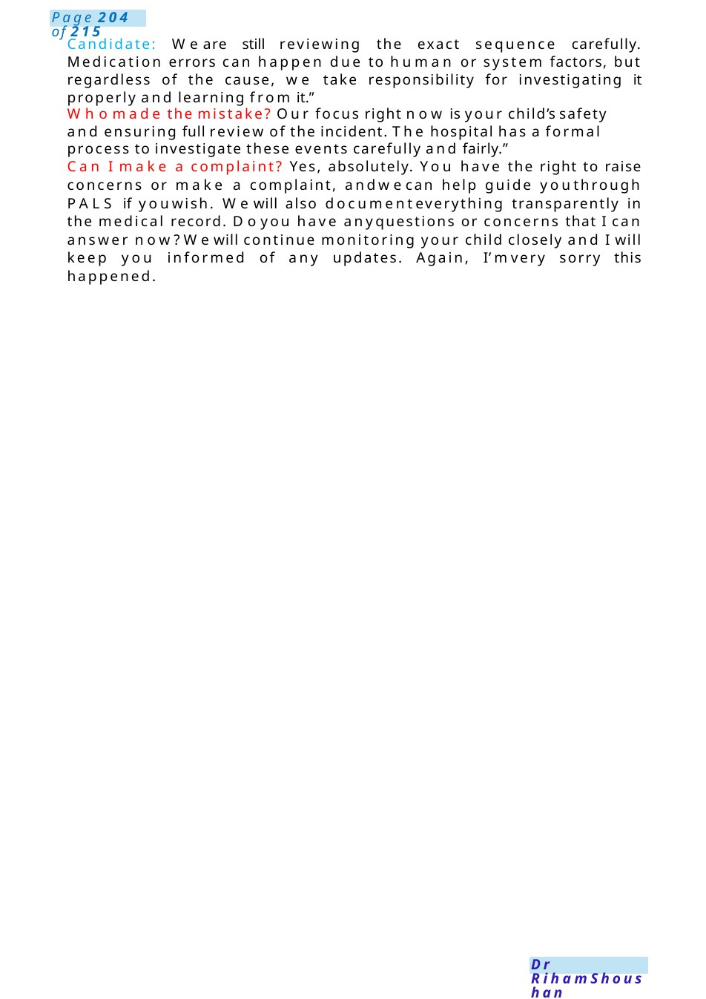

Dexamethasone Overdose
Scenario: Apologising to parents after a medication error —child with croup received 10 times the intended dose of dexamethasone by mistake. Child is currently stable and clinically well. Setting: Youare the paediatric trainee speaking to the mother/father in a quiet room.
Scenario Summary
Scenario: Apologising to parents after a medication error —child with croup received 10 times the intended dose of dexamethasone by mistake. Child is currently stable and clinically well. Setting: Youare the paediatric trainee speaking to the mother/father in a quiet room.
Full Original Scenario

Dexamethasone Overdose
Scenario: Apologising to parents after a medication error —child with croup received 10 times the intended dose of dexamethasone by mistake. Child is currently stable and clinically well.
Setting: Youare the paediatric trainee speaking to the mother/father in a quiet room.
Candidate: Hello Mr/Mrs Ahmed,I’m Dr......, one of the paediatric doctors looking after your child. Before westart, is this a good time to talk? Would you like anyone else to be present with you?”
I wanted to speak with you personally because I need to explain something important regarding your child’s treatment today. I amso sorry to tell you that, an error happened with one of the medications your child received.”
Your child was admitted with croup and was prescribed dexamethasone, which is a steroid medicine commonly used to reduce airway swelling and help breathing.
While giving the medication, a dosing error occurred and your child received approximately ten times the intended dose. I am very sorry this happened. I understand this news may be upsetting and worrying for you, and wetake this very seriously
Theimportant thing is that your child is currently stable, comfortable, andin a goodgeneral condition.
Weassessed your child carefully after discovering the error, and at the momentthere are no signs of serious harm.
Because of the higher dose, we are continuing close observation . We are monitoring Heart rate and blood pressure, Blood sugar levels if needed, Breathing and general behaviour, and watching for any side effects such as vomiting, agitation, sleep disturbance, or changes in blood pressure.
We have also discussed the case with the senior consultant, practice manager, quality team and pharmacy team.
Webelieve it is important to be completely open and honest with families whenever something like this happens.
That is whyI wanted to explain clearly what occurred and answer any questions you mayhave.
We are also reviewing exactly howthis happened so wecan reduce the chance of this happening again to another child.
This includes reviewing the prescribing and checking process with the team. I can understand if you feel angry, frightened, or disappointed. Your feelings are completely understandable.”
Mother: Will mychild have long-term problems? At present, wedo not expect long-term harm from this single dose, especially as your child remains clinically well. However, we will continue monitoring closely and keep you updated.”
Howdid this happen?

Candidate: We are still reviewing the exact sequence carefully. Medication errors can happen due to human or system factors, but regardless of the cause, we take responsibility for investigating it properly and learning from it.”
Whomade the mistake? Our focus right now is your child’s safety and ensuring full review of the incident. The hospital has a formal process to investigate these events carefully and fairly.”
Can I make a complaint? Yes, absolutely. You have the right to raise concerns or make a complaint, andwecan help guide youthrough PALS if youwish. Wewill also documenteverything transparently in the medical record. Doyou have anyquestions or concerns that I can answer now?Wewill continue monitoring your child closely and I will keep you informed of any updates. Again, I’mvery sorry this happened.

Soya Milk
Examscenario: Speak to a mother of an 8-week-old whohas been excessively crying, and she has been feeding the baby fresh soy milk due to concerns about cow's milk causing obesity and was considering starting baby rice as she felt it was hungry.
Prior knowledge: tell me What is your point in giving soya milk? I think it's full of nutrients and I read on the internet that it has health benefits. I totally admire your knowledge, you are right it has a good protein, fat, and good energy source. But for infants under 6 months, it's not recommended as it has manydrawbacks.
Did you hear about these drawbacks? There are some concerns about the fact that soya contains phytoestrogens. The chemical structure of phytoestrogens is like the female hormone estrogen. Because of this, there are concerns that they could affect a baby's reproductive development, especially in babies whodrink only soya-based infant formulas.
Areyoufollowing me?Also, because soya formula contains glucose, it is morelikely to harma baby's teeth.so, Only use soya formula if it has been recommended or prescribed by a health visitor or GP. And so that breastmilk is the best.
Dr, I don't have enough milk, and he is crying a lot and not gaining weight.
I totally understand your worries, but what about arranging a meeting with the breast-feeding team and the lactation consultant? No I am working and I want to give formula. You are doing a horrible job as a momand working.
What about giving him a cowmilk formula? No, I don't want to. MayI know why? I read that it can cause obesity in children, and I want him to eat organic food. I can see how keen you are and ...is lucky to have a momlike you but let metell you that there no proven studies or papers about cow milk and obesity &on the other hand it is the nearest milk which is near in its nutrients and benefits to the breastmilk and we are following his growth chart carefully , if any issues regarding his weight wewill think about other alternatives. does it sound good for you?
Dr. What about giving him baby rice?
I really appreciate your thinking and searching for the best for your baby..., but Because rice is grown in water, any arsenic in the water supply binds to the rice as it grows. Aknown carcinogen, arsenic can influence the risk of cardiovascular, immuneand other diseases, and research has shownthat even low levels can have a negative impact on babies' neurodevelopment.
What about arranging a meeting with a dietitian to talk to you about alternatives?